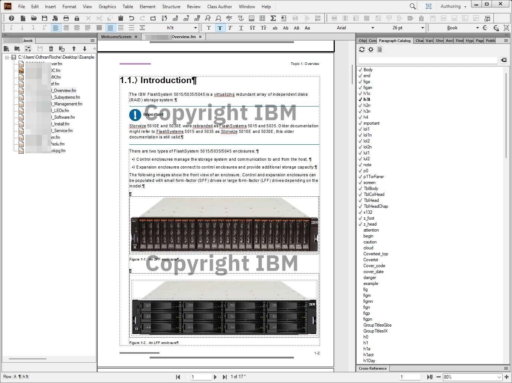

Technical writing


- Wrote hardware service guides at IBM, training international support engineers to service new machines. This was critical upskilling as new machines were released frequently.
- Created onboarding and product documentation at Tungsten Network to help new technical hires onboard quickly and efficiently.
- Documented processes at Orange Logic to help train new employees while also formalising processes through written documentation.
- Architected the documentation creation, quality, and management processes for the technical team at Orange Logic. This created a scalable structure for all engineers to contribute documentation.